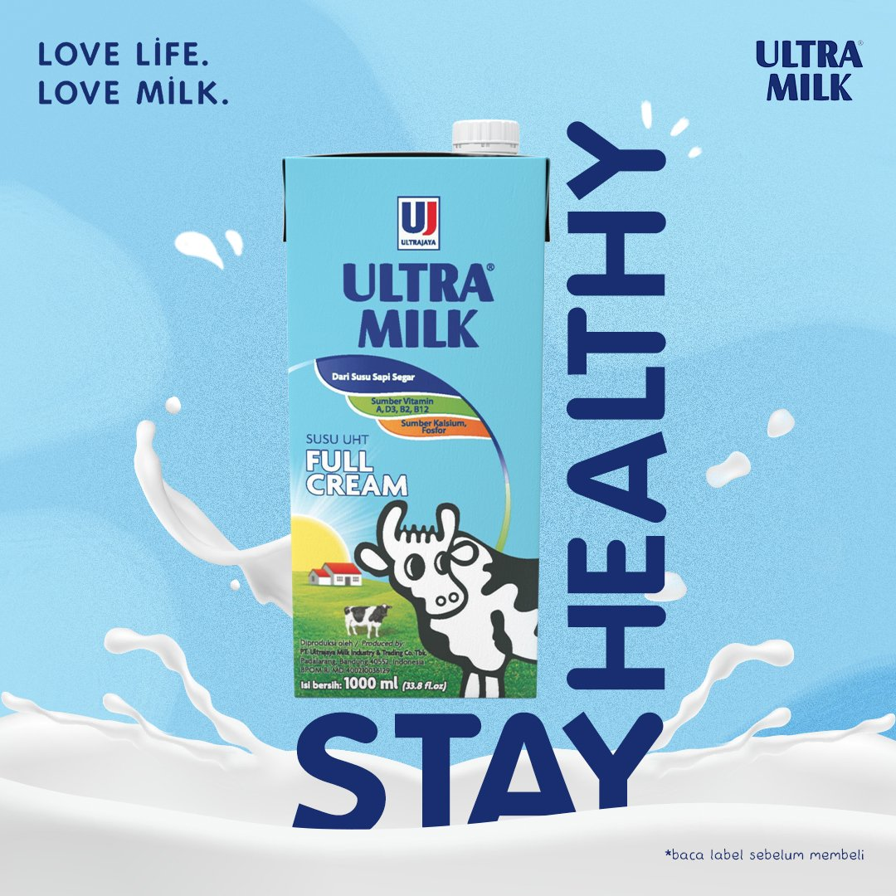
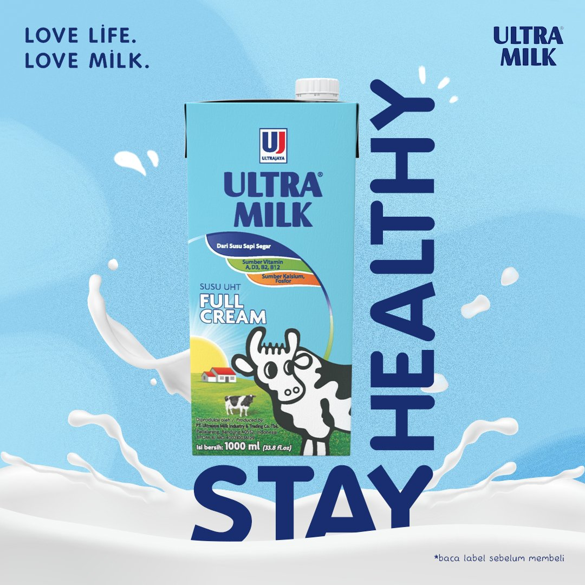

Gerindra-PKB Sepakat Koalisi, Demokat Bicara Soal Independensi..
Partai Demokrat meminta semua pihak menghargai dan menghormati kemandirian dan independensi partainya dalam menentukan calon mitra koalisi untuk Pilpres 2024. Hal itu menyusul menanggapi Partai Gerindra dan Partai Kebangkitan Bangsa (PKB) secara resmi sepakat untuk..
Mahasiswa Sains Komunikasi Unida Bogor Edukasi Warga Soal Literasi Digital
Pemahaman soal literasi digital di mayoritas masyarakat Indonesia masih cukup rendah. Hal ini tampak pada maraknya hoaks, penipuan online dan banyaknya konten khususnya video yang kurang berkualitas. Untuk memberikan pencerahan kepada warga, mahasiswa dan dosen..
Klasemen BRI Liga 1: Hajar Rans Nusantara, PSM Makassar Tempel Madura United
PSM Makassar meramaikan persaingan papan atas pada awal BRI Liga 1 2022/2023. Juku Eja menyamai poin Madura United dan Persikabo 1973 yang menguasai dua urutan teratas klasemen Liga 1. PSM kini mengoleksi 10 poin, sama seperti dua pesaingnya. Mereka hanya kalah selisih gol dari..
Festival Kuliner Lokal 17.8, Dukung Bisnis Makanan Dalam Negeri di Momen HUT ke-77 RI
Menggemakan dukungan untuk pengusaha makanan dalam negeri, ShopeeFood menyelenggarakan Festival Kuliner Lokal 17.8, merujuk spirit HUT ke-77 RI, "Pulih Lebih Cepat, Bangkit Lebih Kuat." Kampanye ini masih akan berlangsung hingga Rabu, 17 Agustus 2022. Seperti inisiasi-inisiasi sebelumnya, mereka telah..
 
